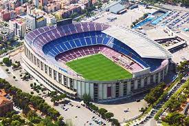
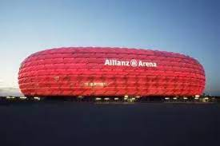
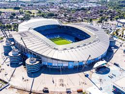

A match consists of two 45 minutes halves with a 15 minute rest period in between.
Each team can have a minimum off 11 players (including 1 goalkeeper who is the only player
allowed to handle the ball within the 18 yard box) and a minimum of 7 players are needed to
constitute a match.
The field must be made of either artificial or natural grass. The size of pitches is allowed to vary
but must be within 100-130 yards long and 50-100 yards wide. The pitch must also be marked
with a rectangular shape around the outside showing out of bounds, two six yard boxes, two 18
yard boxes and a centre
circle. A spot for a penalty placed 12 yards out of both goals and centre circle must also be visible.
The ball must have a circumference of 58-61cm and be of a circular shape.
Each team can name up to 7 substitute players. Substitutions can be made at any time of the
match with each team being able to make a maximum of 3 substitutions per side. In the event of
all three substitutes being made and a player having to leave the field for injury the team will be
forced to play without a replacement for that player.
Each game must include one referee and two assistant referee's (linesmen). It's the job of the
referee to act as time keeper and make any decisions which may need to be made such as fouls,
free kicks, throw ins, penalties and added on time at the end of each half. The referee may
consult the assistant referees at any time in the match regarding a decision. It's the assistant
referee's job to spot offside's in the match (see below), throw ins for either team and also assist
the referee in all decision making processes where appropriate.
If the game needs to head to extra time as a result of both teams being level in a match then 30
minutes will be added in the form of two 15 minute halves after the allotted 90 minutes.
If teams are still level after extra time then a penalty shootout must take place.
The whole ball must cross the goal line for it to constitute as a goal.
For fouls committed a player could receive either a yellow or red card depending on the severity
of the foul; this comes down to the referee's discretion. The yellow is a warning and a red card is
a dismissal of that player. Two yellow cards will equal one red. Once a player is sent off then they
cannot be replaced.
If a ball goes out of play off an opponent in either of the side lines then it is given as a throw in. If
it goes out of play off an attacking player on the base line then it is a goal kick. If it comes off a
defending player it is a corner kick.
stadium
Santiago Bernabéu

Camp Nou

Allianz Arena
Diego Armando Maradona
Le Parc des Princes

Etihad
THERE ARE OTHER STADIUMS,TOO
IF YOU WANT TO SEE CLICK HERE
PLAYERS
LIONEL MESSI
he plays for psg( paris saint-german) and he is from Argentina.